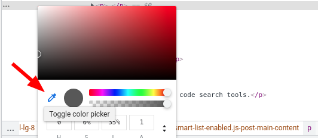
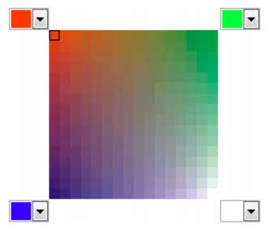

3.2.1 Tipo input color
El tipo input color permite al usuario especificar un color.
La mayoría de los navegadores que lo soportan despliegan una paleta o selector visual
de colores (color picker) cuando el usuario hace clic en el control. En navegadores que
no implementan una interfaz interactiva de selección, el elemento se comporta como un
campo de texto estándar donde el usuario puede escribir un código de color en formato
hexadecimal (por ejemplo, #ADD8E6).

Al enviar el formulario, el navegador valida de manera nativa que el valor proporcionado sea
un código hexadecimal válido de siete caracteres compuesto por el símbolo
numeral (#) seguido de seis dígitos hexadecimales en minúscula.

Figura 3.5: Nuevos tipos de elementos input de formularios de HTML5
| Tipo de input | Descripción |
|---|---|
color |
Permite seleccionar un color mediante una paleta gráfica o código hexadecimal. |
date |
Introduce una fecha con año, mes y día (sin hora). |
datetime |
Permite introducir una fecha y hora basada en la zona horaria UTC. |
datetime-local |
Introduce una fecha y hora local del usuario (sin zona horaria). |
email |
Campo para direcciones de correo electrónico con validación de sintaxis integrada. |
month |
Permite al usuario seleccionar un mes y año. |
number |
Campo para introducir valores numéricos con botones de incremento/decremento. |
range |
Control deslizante para seleccionar un valor dentro de un rango numérico específico. |
search |
Campo optimizado para consultas de búsqueda de texto. |
tel |
Campo destinado a números telefónicos. |
time |
Permite al usuario introducir una hora (horas y minutos). |
url |
Valida que el texto introducido corresponda a un formato válido de dirección Web. |
week |
Permite elegir un número de semana y su respectivo año. |